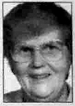

Agnes Matilda Brändström
Blev 76 år.
| Far: | Nils Helmer Brändström (1888 - 1956) |
|---|
| Mor: | Elin Matilda Lindqvist (1896 - 1973) |
|---|
| Född: | 1920-01-20 Brännforsliden 1, Degerfors fs, Degerfors sn. [1] |
|---|
| Levde: | 1940 Brännforsliden 1:9, Åmsele kbfd, Degerfors sn (AC). [2] |
|---|
| Inflyttad till: | 1942-10-21 Torrberg 1:3, Norsjö fs, Norsjö sn. [3] |
|---|
| Död: | 1996-07-20 Hjoggböleliden 15, Skellefteå, Bureå fs, Skellefteå kn. [4] |
|---|
| Vigsel: | 1942-09-26 Åmsele kbfd, Degerfors sn. [5] | Bo Hjalmar Hilding Vesterlund, hem.äg. från Norsjö och Agnes Maitlda Brändström från Brännforsliden. |
|---|
| Levde: | 1946 Torrberg 1:3, Norsjö fs, Norsjö sn. [6] | |
|---|
| Inflyttad till: | 1950 Hjoggböle 1:13, Hjoggböleliden, Bureå fs, Bureå sn. [6] | |
|---|
| Levde: | 1971 V Hjoggböle, postlåda 286, Hjoggböle, Bureå fs, Skellefteå kn. [7] | |
|---|
| Levde: | 1991 Hjoggböle 1:13, Hjoggböleliden 13286, Bureå fs, Skellefteå kn. [8] | |
|---|
| Barn: |
|---|
| Rut Inez Gunnel Vesterlund Gustafsson (1943 - ) |
| Frans Gösta Georg Westerlund (1945 - ) |
| Siri Mona Elisabeth Vesterlund (1949 - ) |
Personhistoria
| Årtal | Ålder | Händelse |
|---|
| 1920 |
|
Födelse 1920-01-20 Brännforsliden 1, Degerfors fs, Degerfors sn [1] |
| 1940 |
|
Levde 1940 Brännforsliden 1:9, Åmsele kbfd, Degerfors sn (AC) [2] |
| 1942 |
22 år |
Vigsel Bo Hjalmar Hilding Westerlund 1942-09-26 Åmsele kbfd, Degerfors sn [5] |
| 1942 |
22 år |
Inflyttad till 1942-10-21 Torrberg 1:3, Norsjö fs, Norsjö sn [3] |
| 1943 |
23 år |
Dottern Rut Inez Gunnel Vesterlund Gustafsson föds 1943-07-04 Torrberg 1:3, Norsjö fs, Norsjö sn [3] |
| 1945 |
25 år |
Sonen Frans Gösta Georg Westerlund föds 1945-03-03 Torrberg 1:3, Norsjö fs, Norsjö sn [3] |
| 1946 |
|
Levde Bo Hjalmar Hilding Westerlund 1946 Torrberg 1:3, Norsjö fs, Norsjö sn [6] |
| 1949 |
29 år |
Dottern Siri Mona Elisabeth Vesterlund föds 1949-06-25 Torrberg 1:3, Norsjö fs, Norsjö sn [9] |
| 1950 |
|
Inflyttad till Bo Hjalmar Hilding Westerlund 1950 Hjoggböle 1:13, Hjoggböleliden, Bureå fs, Bureå sn [6] |
| 1956 |
36 år |
Fadern Nils Helmer Brändström dör 1956-09-17 Brännforsliden 1:9, Åmsele kbfd, Degerfors sn (AC) [10] |
| 1971 |
|
Levde Bo Hjalmar Hilding Westerlund 1971 V Hjoggböle, postlåda 286, Hjoggböle, Bureå fs, Skellefteå kn [7] |
| 1973 |
53 år |
Modern Elin Matilda Lindqvist dör 1973-09-21 Brännforsliden, Åmsele, Åmsele fs, Vindelns kn [11] |
| 1991 |
|
Levde Bo Hjalmar Hilding Westerlund 1991 Hjoggböle 1:13, Hjoggböleliden 13286, Bureå fs, Skellefteå kn [8] |
| 1996 |
76 år |
Död 1996-07-20 Hjoggböleliden 15, Skellefteå, Bureå fs, Skellefteå kn [4] |
Dokument
Källor
| [1] | Degerfors (AC) AIIa:5 (1910-1920) Bild: 2130 Sida: 582, SCB Födda AC Degerfors 33/1920 |
| |
| | |
| [2] | Statistiska Centralbyrån (SCB) - 1940 års folkräkning H1AA:531 (1940) Bild: 4940 Sida: 7 |
| |
| | |
| [3] | Norsjö (AC) AIIa:10 (1928-1948) Bild: 170 Sida: 609 |
| |
| | |
| [4] | RTB 96 / SPAR 92f / SPAR 96 |
| |
| | |
| [5] | Åmsele (AC) EI:1 (1924-1963) 8/1942 Bild: 370 |
| |
| | |
| [6] | Mtl Sveriges befolkning 1950 |
| |
| | |
| [7] | Mtl Västerbottens län 1971 |
| |
| | |
| [8] | Mantalslängd 1991, Västerbottens län |
| |
| | |
| [9] | SCB Födda AC Norsjö 46/1949, Mtl Sveriges befolkning 1950 |
| |
| | |
| [10] | AL, DA, DOR 52-60, PA DB, SDB7_00921820 |
| |
| | |
| [11] | MTL 71, RTB 73, SDB7_01503146 |
| |
|
|  |
Agnes Westerlund född Brändström
NV 1996-07-23
|
|
{kind=link}